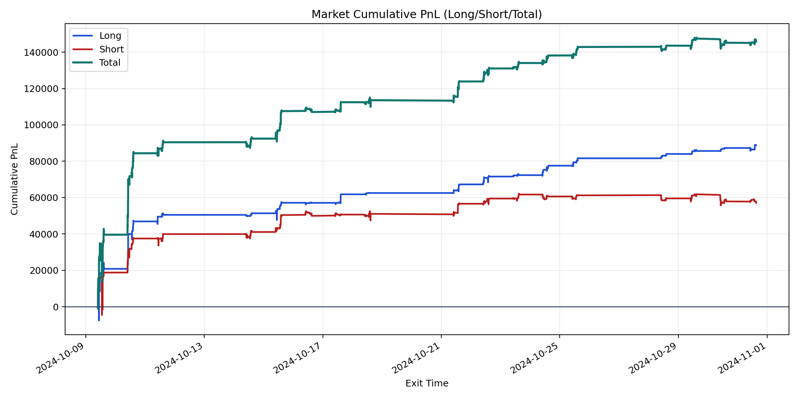
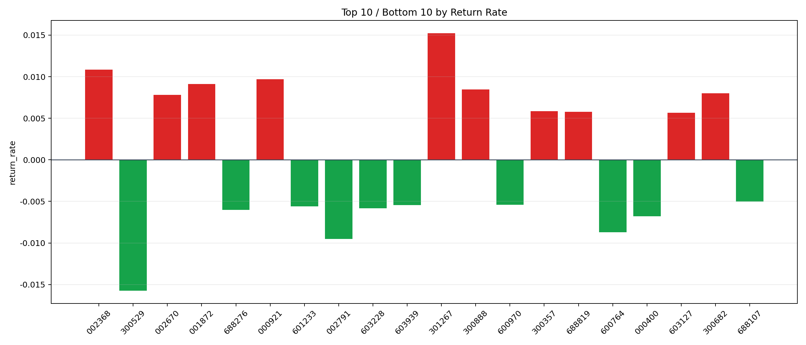

| repo_root | /home/haoranyou/data/output/alpha0.4_1w_5s_3ticks_index_filter/index_weights_500 |
|---|---|
| period_months | 1 |
| period_label | 2024-10-09_to_2024-10-31 |
| start_time | 2024-10-09 09:50:32 |
| end_time | 2024-10-31 15:00:00 |
| n_trades | 8584 |
| n_symbols | 139 |
| total_pnl | 145826.71310000002 |
| long_total_pnl | 88768.99595000001 |
| short_total_pnl | 57057.71715000004 |
| total_entry_notional | 77665355.0 |
| long_entry_notional | 29893390.0 |
| short_entry_notional | 47771965.0 |
| total_return_rate | 0.0018776288745477314 |
| long_return_rate | 0.0029695192131103236 |
| short_return_rate | 0.0011943766003763932 |
| top_symbols_by_return | ["301267", "002368", "000921", "001872", "300888", "300682", "002670", "300357", "688819", "603127"] |
| bottom_symbols_by_return | ["300529", "002791", "600764", "000400", "688276", "603228", "601233", "603939", "600970", "688107"] |

